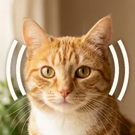
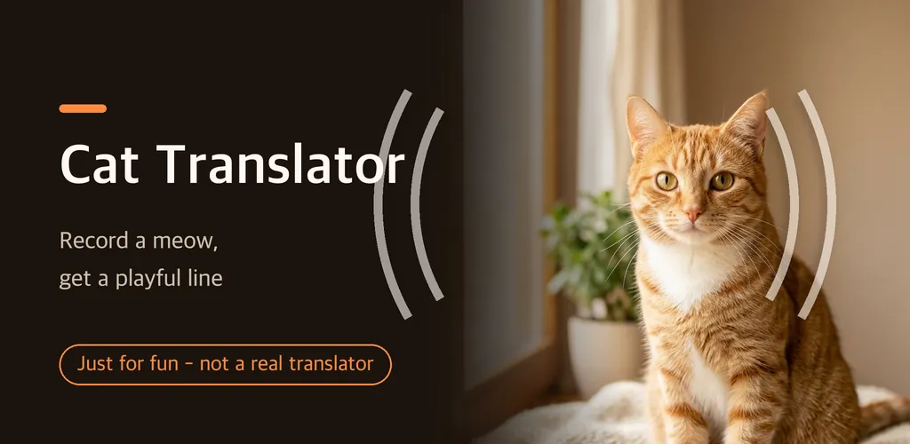
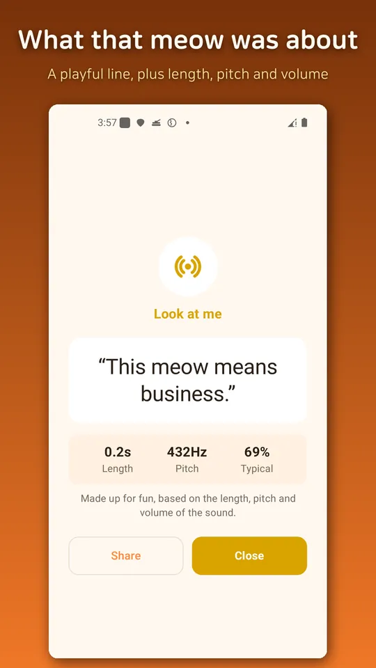
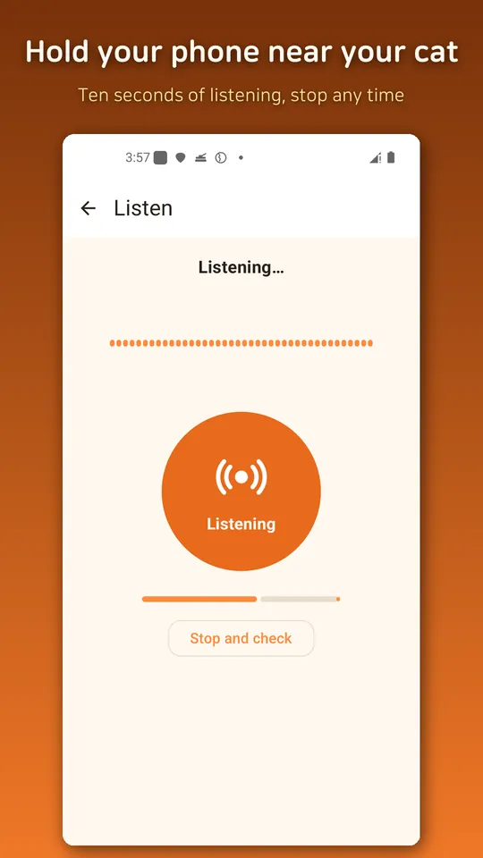
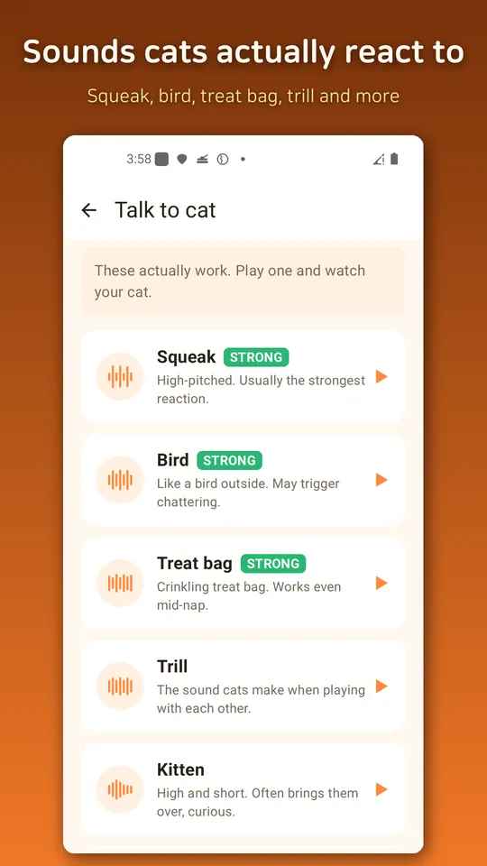
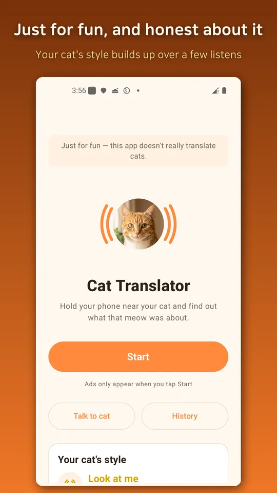

Cat Translator - Meow Sounds
Cat translator for fun. Record a meow for a playful line, plus cat sounds.





About this app
This is a cat translator made for fun. It does not really translate cats.
When your cat meows, hold your phone close and tap Start. A moment later a line pops up that fits the sound. Maybe it is a hungry complaint, maybe a demand to play, maybe just hello. This app was not built to be right. It was built so you and your cat can be silly together.
The result comes from the sound, not from a dice roll
The app measures how long the meow was, how high it was and how loud it was, picks one of eight moods, and matches a line to it. Play the same sound again and you get the same line. Nothing is less fun than an app that says something different every single time. There are over a thousand lines in here.
Talk to cat actually works
Seven sounds cats really respond to are built in, all made from scratch: a squeaky mouse, a bird outside the window, a crinkling treat bag and more. Play one and watch those ears swivel. The strongest ones are marked.
Your cat's style
As your recordings pile up, a profile card grows and shows which mood your cat uses most.
Share the funny ones
Every result card can be saved and shared as an image.
Our promises
- No subscription, no purchases. Everything is free.
- Recordings are analysed and thrown away immediately. Nothing is saved to a file and nothing leaves your phone.
- The app never says anything about health or illness. That is your vet's job.
This app is for entertainment. Please take every result as a joke.
Ads keep it free, and they only appear when you enter from Start on the home screen.
Android · free with ads · Developer: RealTunaLove · Store listing in 17 languages
Background story: why I built it